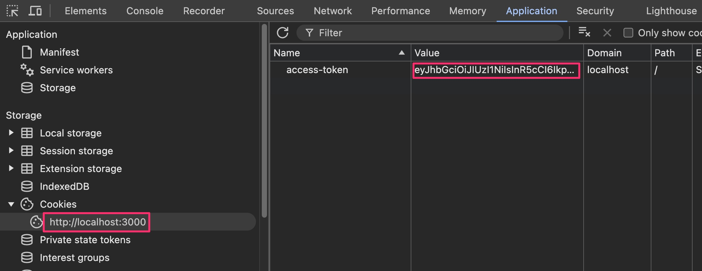
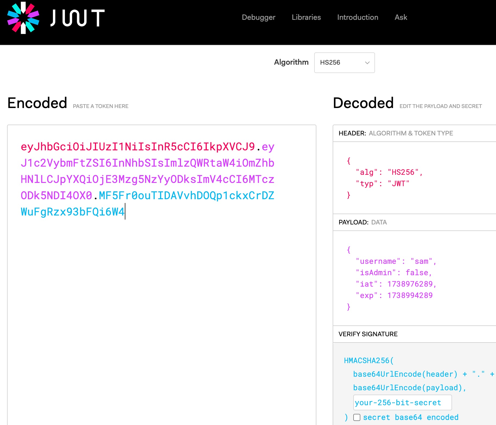

When you submitted your username, the HTTP response included a
Set-Cookie response header whose value was a JWT.
If you happen to be unfamiliar with cookies, here is a great
tutorial.
To see the cookie, you need to open the Developer Tools panel in your browser.
For many browsers you can press the F12 key to do this. Please google for this if you are having trouble.
Once you have the Developer Tools open, you need to find the correct tab to see the cookies.
- For Chrome it is the Application tab.
- For Firefox it is the Storage tab.
In both cases, expand the Cookies item on the left, then click the URL.
Here is a screenshot from Chrome:

Copy the ENTIRE cookie value (to the right of the "access-token" cookie name) and paste it into a text editor for easy study. Make sure you have captured all three regions.
It might be difficult to select the entire cookie value since it is mostly off-screen. One trick is to double-click on it.
Rather than using the base64 decoder site we used earlier, let's do something more fun.
Go to
https://jwt.io and paste in your entire JWT into the left side after first removing its example.
You should see something like this:

Here, this site has done the base64 decoding for us!